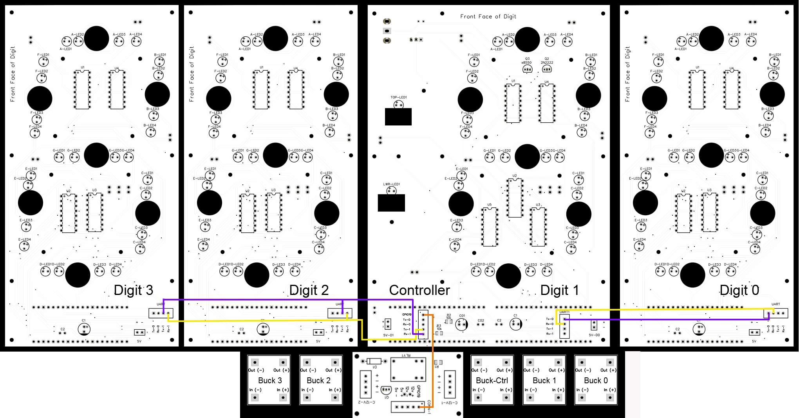

UART and Relay Wiring¶
UART (Universal Asynchronous Receiver-Transmitter) facilitates communication between the conductor and the digit PCBs. The conductor acts as the central hub, transmitting commands and receiving status updates from the digits.
- Conductor (Transmitter and Receiver):
- The conductor's UART
Tx(transmit) pin sends data to the digits, such as display commands and brightness levels. - The conductor's UART
Rx(receive) pin listens for acknowledgment or status updates from the digits.
- The conductor's UART
- Digits (Receivers and Transmitters):
- Each digit PCB's UART
Rxpin receives commands from the conductor. - The digit PCBs' UART
Txpins send status updates or responses back to the conductor.
- Each digit PCB's UART
This bidirectional communication ensures synchronized operation of the display, enabling the conductor to manage all digits effectively.
UART Wiring¶
The UART wiring diagram illustrates the communication connections between the conductor and the digit PCBs. It shows how the UART Tx (transmit) and Rx (receive) pins are connected using the two UART channels 0 and 1.
- The conductor's channel 1
Txpin is connected to the channel 1Rxpin on the digit 2 PCB. The conductor PCB has tracing that connects the conductor's channel 0Txpin to channel 0Rxpin on digit 1. - The conductor's channel 1
Rxpin is connected to the channel 1Txpin of the digit 2 PCB. The conductor PCB has tracing that connects the conductor's channel 0Rxpin to channel 0Txpin on digit 1. - Digit 2 and 3 PCB's
Txpins are connected and Digit 0 PCB and Digit 1 on the conductor PCB'sTxpin are connected. The same is true for theRxpins for Digits 0-3.

Note the wire color references in the section below are in yellow and blue which can be substituted by white and black.
- Follow the picture below for Digit 0 and 1 UART wiring. On Digit 0 PCB, (A) connect the yellow (white) wire to the
Rx-0and the blue (black) wire to theTx-0terminal block connector. Route the wires to the Digit 1Rx-0andTx-0terminal block connectors and give the wires about 10mm of extra length, then cut. (B) Slide the heat shrink over the wires and position them according to the picture. On Digit 1 PCB, (C) connect the yellow (white) wire to theRx-0and the blue (black) wire to theTx-0terminal block connector. - Follow the picture below for Digit 2 and 3 UART wiring. On Digit 2 PCB, (A) connect the yellow (white) wire to the
Rx-1and the blue (black) wire to theTx-1terminal block connector. Route the wires to the Digit 3Rx-1andTx-1terminal block connectors and give the wires about 10mm of extra length, then cut. (B) slide the heat shrink over the wires and position them according to the picture. On Digit 3 PCB, (C) connect the yellow (white) wire to theRx-1and the blue (black) wire to theTx-1terminal block connector.
- Follow the picture below for the conductor to Digit 2 UART wiring. On the conductor PCB, (A) connect the yellow (white) wire to the
Rx-1and the blue (black) wire to theTx-1terminal block connector. Route the wires to the Digit 2Rx-1andTx-1terminal block connectors and give the wires about 10mm of extra length, then cut. On Digit 3 PCB, (C) connect the yellow (white) wire to theTx-1and the blue (black) wire to theRx-1terminal block connector.
Relay Wiring¶
- Follow the picture below starting from the back side of the conductor PCB. Using any color 28 AWG wire, connect the (A) terminal block connector pin
GPIO19from the conductor PCB to the (B) terminal block connector pinGPIO19on the power management PCB.
- Following the picture below, turn the conductor PCB over so the front face is up. (A) Strip 3mm of insulation then tin the stripped end with solder. Connect the white wire to the
+on the5v-OUTterminal block connector and the black wire onto the-. (B) Route the white wire to the5v +and the black wire to the5v -on the power management PCB, then cut the wires with at least 2cm of slack. Strip 3mm of insulation, tin the stripped end with solder, then connect each wire to the appropriate terminal block connector.
- Following the picture below, position the heat shrink and apply heat with a heat gun. Add the two remaining M1.7x6mm self tapping screws to the power management PCB. Ensure all 4 screws securing the power management PCB are snug, but do not over tighten.